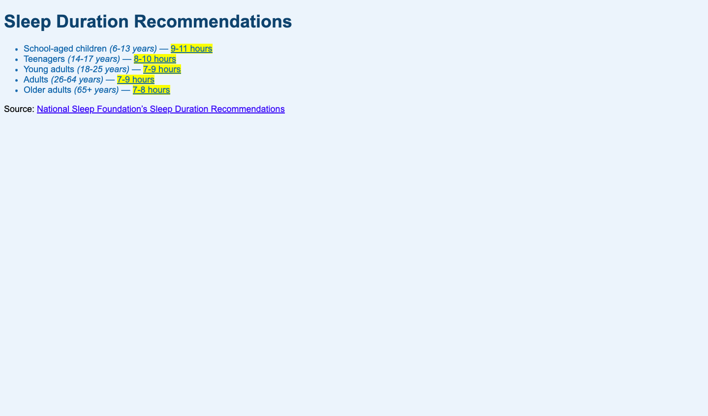

TThis project demonstrates my ability to create a website with fully functional links and properly cited sources. It highlights my attention to detail in ensuring that all links navigate correctly and enhance the user experience. Additionally, it showcases my understanding of proper citation practices, reinforcing credibility and professionalism in web content. The project reflects both my technical skills and my commitment to accuracy and ethical web development practices.
Challenges: One of the main challenges I faced with this project was ensuring all links worked correctly and directed users to the intended pages. I also focused on properly citing sources to maintain credibility, which required careful attention to detail. Balancing functionality with a clean, user-friendly design was another challenge, as I wanted the links and citations to enhance the site without disrupting the layout or flow.
What I Learned: Through this project, I learned to create functional links, properly cite sources, and integrate these elements seamlessly into a clean and user-friendly website.